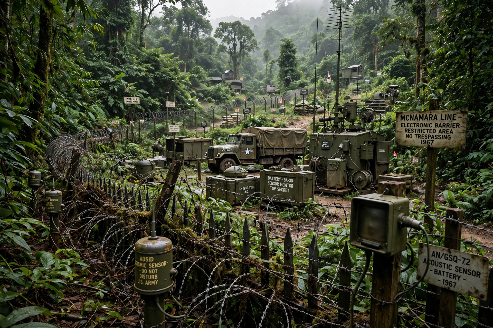

The McNamara Line was an anti-infiltration barrier system proposed during the Vietnam War by U.S. Secretary of Defense Robert McNamara in 1966–1967, intended to block North Vietnamese forces and supplies crossing the Demilitarized Zone and Laos into South Vietnam.

| McNamara Line | |
|---|---|
| Proposed | 1966 |
| Location | Vietnamese DMZ and Laos |
| Components | Sensors, mines, strongpoints |
The system combined a fortified trace with air-dropped acoustic and seismic sensors (Operation Igloo White) monitored from Nakhon Phanom in Thailand, triggering airstrikes along the Ho Chi Minh Trail.
Costly (about $1.7 billion) and of disputed effectiveness, the barrier was largely abandoned after 1968, though its sensor technology pioneered modern battlefield surveillance.